如何制作一个360度全景
360全景不是凭空生成的，要制作一个360全景，我们需要有原始的图像素材，原始图像素材的来源可以是：A、在现实的场景中，使用相机的全景拍摄功能得到的鱼眼图像
B、通过建模渲染得到的虚拟图像
下文中的表格对比了在不同的设备、拍摄机位、拼合模式、拍摄难度下所能获得到的鱼眼图像
| 原始图像素材类型 | 采用的相机设备 | 采用的机位 | 采用的拼合模式 | 特点描述 | ||||
| 鼓形，两边被切的鱼眼图像： 上下弧线处180度 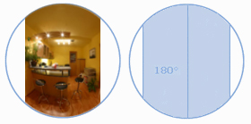 |
Nikon或Canon单反相机 Sigma 8mm镜头 |
竖直拍摄 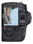 |
拍摄水平一圈四张鱼眼图像，用（Drum）模式拼合： 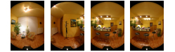 |
拍摄简单 图像清晰 推荐 |
||||
| 全帧，四边被切的鱼眼图像： 对角线180度 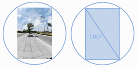 |
Nikon单反相机Nikon 10.5mm镜头 | 竖直拍摄 |
拍摄水平一圈六张或者加天地两张鱼眼图像，用（Fullframe6+X）模式拼合： 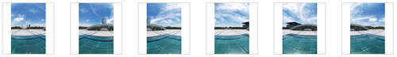 |
拍摄较为复杂 图像清晰 |
||||
| 全帧，四边被切的鱼眼图像： 对角线180度 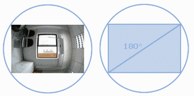 |
Nikon单反相机Nikon 10.5mm镜头 | 横向拍摄 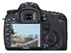 |
拍摄水平一圈四张或者加天地两张鱼眼图像，用（Fullframe4+X）模式拼合： 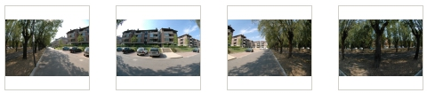 |
拍摄较为复杂 图像清晰 |
||||
| 整圆，所有角度都能够达到180度及以上 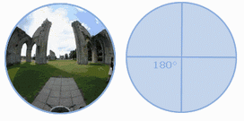 |
Nikon或Canon全画幅单反相机适马8MM鱼眼镜头 | 横向拍摄或者竖向拍摄 |
拍摄水平两张或者三张鱼眼图像，用（Circular）模式拼合： 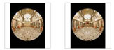 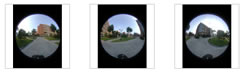 |
拍摄简单 图像清晰 |
||||
| 虚拟图像，由三维建模的场景渲染获得： 90度*90度 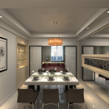 |
3Dmax Maya AutoCAD 或其他软件建模 |
无 | 渲染正方体形式六个面的图像，用（Cube Face）模式拼合： 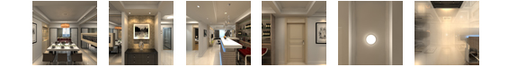 |
效果可自行设定 | ||||
要拍摄全景素材我们需要用到一些专业设备，如下：
最后我们来看看如何使用图片素材来生成360全景图片
第一步：拍摄全景图原始素材
由专业的摄影师使用专业相机、鱼眼镜头以及三脚架拍摄汽车、房间或者其他需要360全景展示的对象照片
我们来看下备用的三张原始素材
| 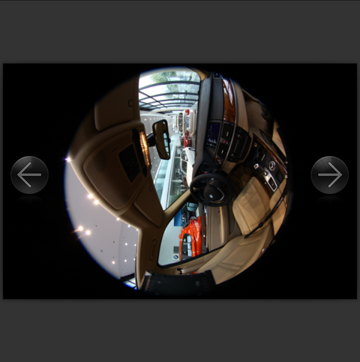 | 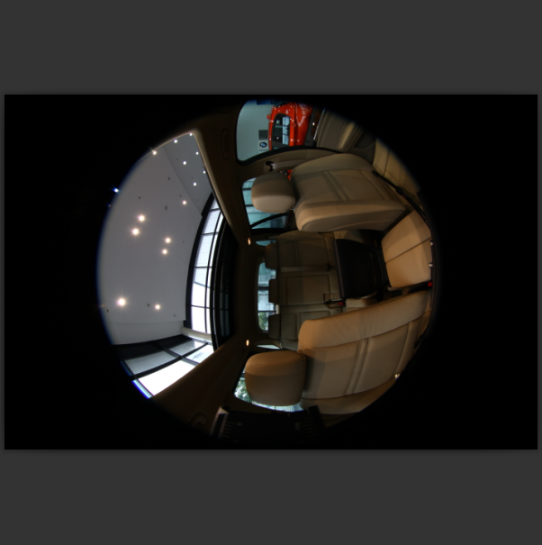 | 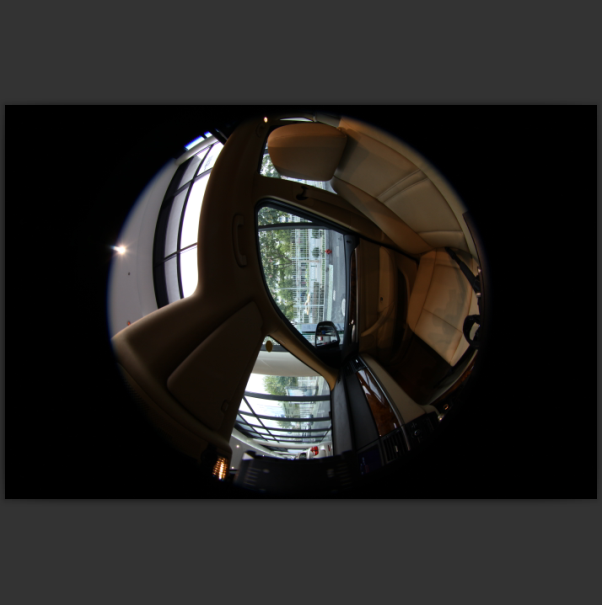 |
第二步：使用“PTGui Pro”软件合成全景图片
下载“PTGui Pro”软件并安装，然后打开软件：
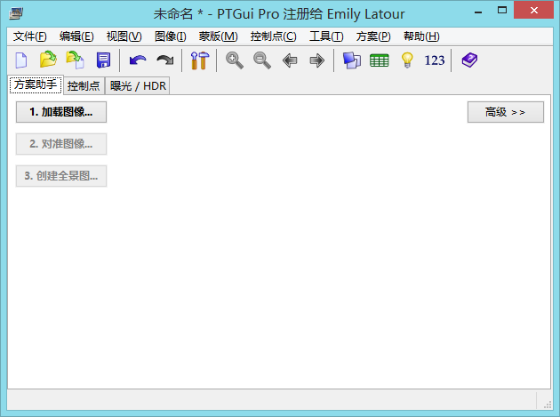
根据提示，点击“加载图像”，将拍摄的全景图原始素材导入，如下图：
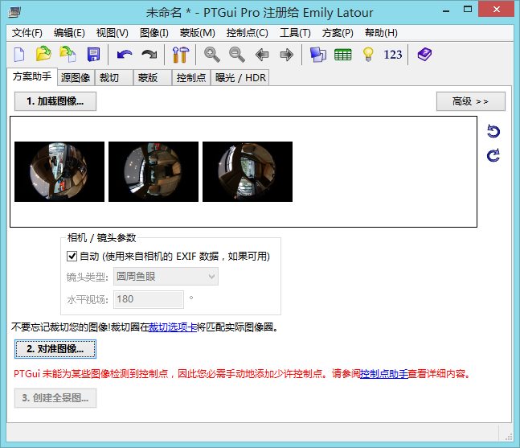
----------
接下来点击“对准图像”
如果图像拍摄的位置准确，软件会直接进入到全景图编辑流程
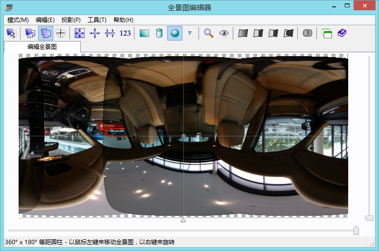
通常，这里我们不要对图片进行改动，直接关闭编辑器进入下一步“创建全景图”
而有时候图像拍摄的不那么准确，那么我们需要通过手动的方式来对图片进行调整
如图：
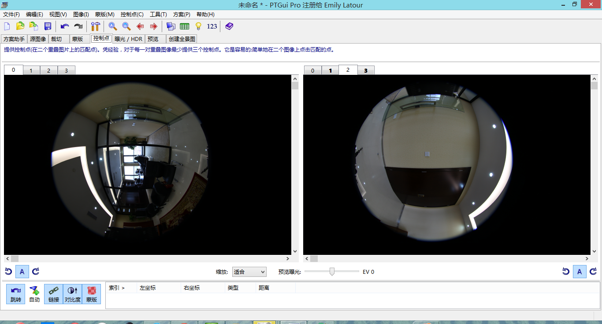
我们需要比对左右的2张图片，找到图像上重合的点（至少3个点）来进行标记
如图：
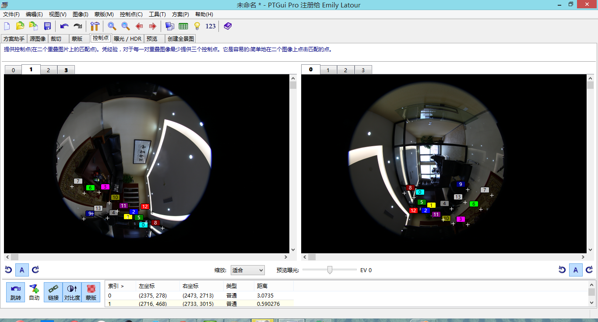
在上图我们一共找了若干个两张图片重合的点并作了标记，如此这般，需要对全部有可能有重合的图片都至少标记3个“控制点”。
----------
调整完图像之后，我们可以创建全景图了

设置输出的文件目录，点击“创建全景图”，我们就获得了加工好了全景图片。
来看下我们得到的全景图片：
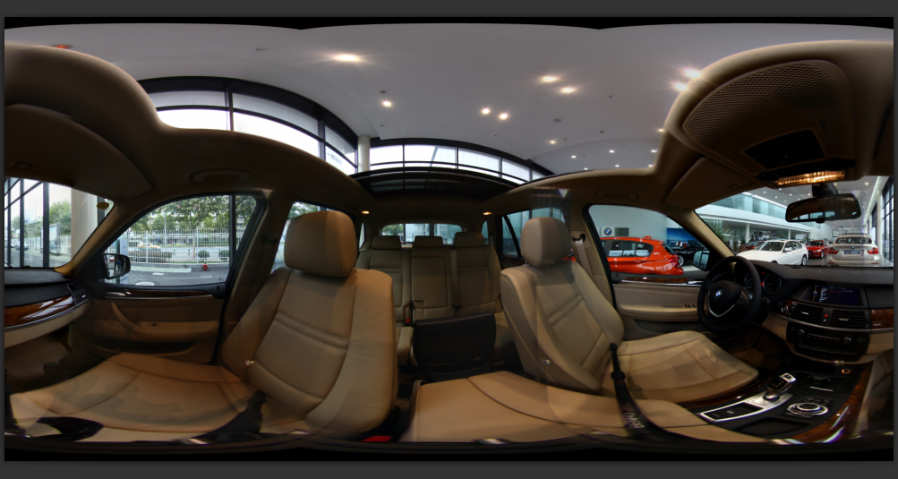
这个图片就是所谓的“全景图片”了，看得很晕吧，没关系，还只是半成品，通过第三步我们将进一步加工这张图片以生成效果精美的360全景展示效果
----------------------------------------
第三步：使用“Pano2VR”软件实现360全景效果
下载“Pano2VR”软件并安装，然后打开软件：
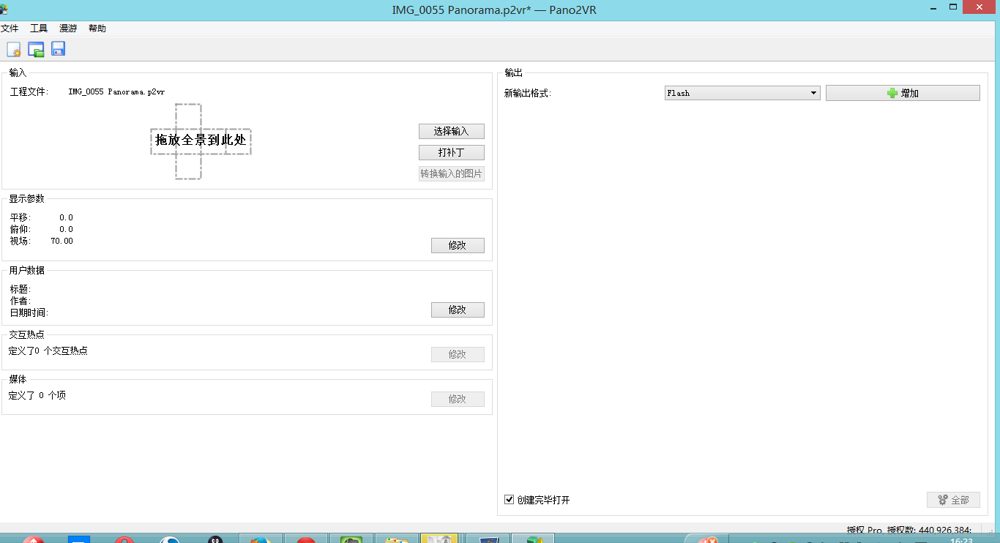
在上图中，点击“选择输入”，将第二步生成的全景图片导入进去；同时点击“新输出格式”的下拉框，选择“HTML5”选项，然后点击“增加”按钮
如图
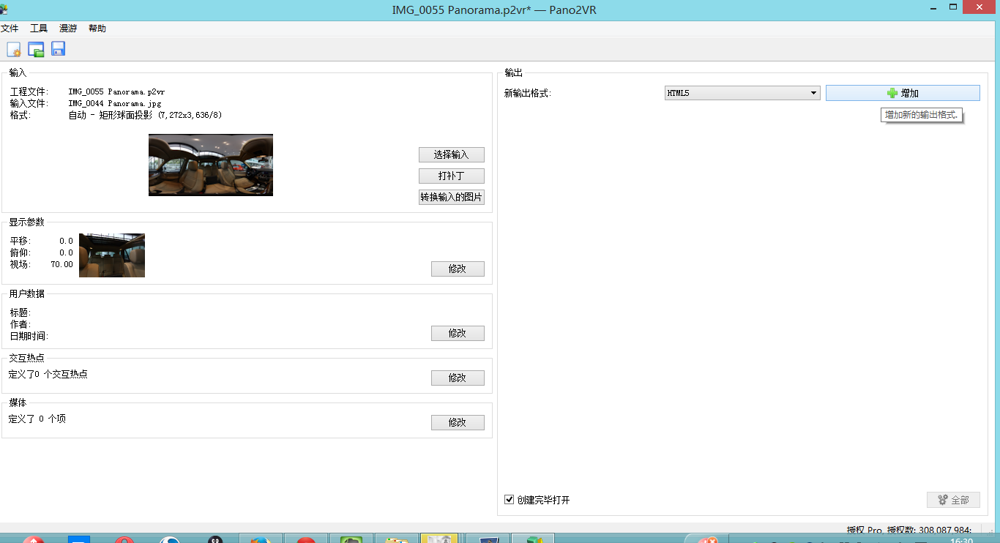
点击增加按钮后得到
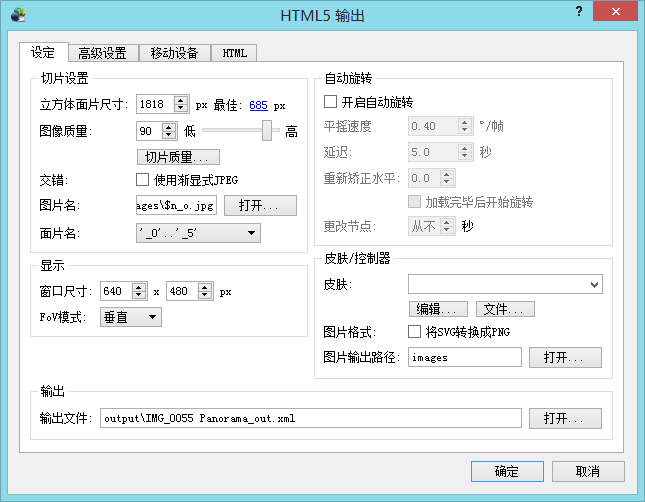
设置立方体面片尺寸为700
设置输出文件的输出目录后，点击确定，就开始生成360全景效果了
打开输出目录我们看到
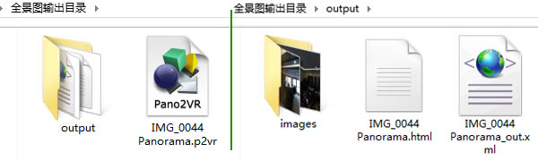
此时，浏览器会自动打开上图中的.html文件，360全景效果就可以被欣赏到了
请记得将“images”目录下的6张图片通过微企后台上传全景图片的位置上传到微企的服务器，您就可以通过手机端来查看360全景效果了